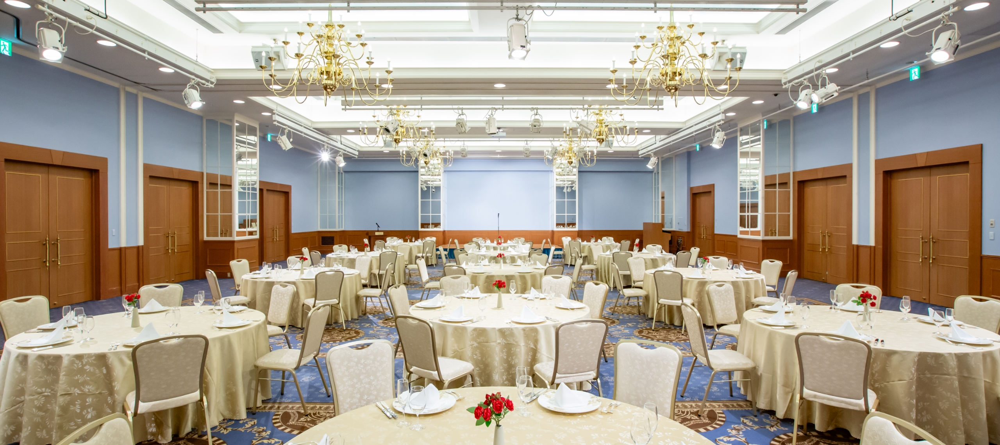
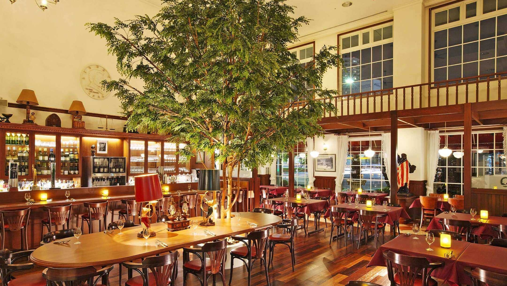
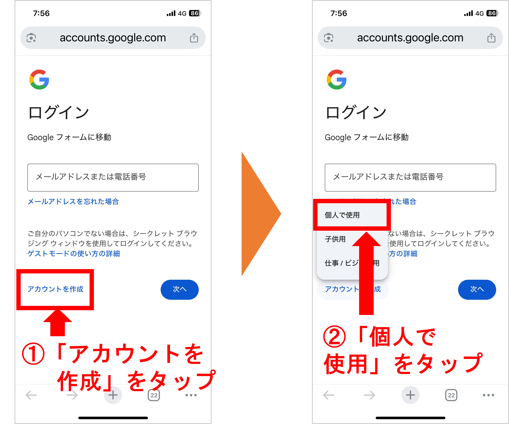

35年分の「久しぶり」を
あの日のままの笑顔で。
2026.8.14 (Fri)
1991年卒 石部中学校 同窓会
5/4時点での参加申込数：63人
お知らせ
- 2026/3/26 同窓会告知ページを公開し、参加募集を開始しました
開催概要
同窓会（1次会）
- 📅日時
-
2026年8月14日（金）
12:00～14:30
11:30 受付開始 11:55 集合写真撮影※開始前に全体集合写真を撮影しますので、11:50までに受付を済ませてください
- 💴会費
- 10,000円（当日現金支払い） ビュッフェ形式のフード＋ドリンク飲み放題
- 📍場所
-
ホテルボストンプラザ草津びわ湖
〒525-0037 滋賀県草津市西大路町１－２７
（JR琵琶湖線 草津駅西口より徒歩1分）
公式サイトはこちら

2次会
- 📅日時
- 同日 14:45 ～ 16:30
- 💴会費
- 4,000円（当日現金支払い）軽食＋ドリンク飲み放題
- 📍場所
-
ALL DAY DINING RIVERTY
ホテルボストンプラザ草津びわ湖（1次会会場）1F

出欠のご確認
[回答〆切： 7月15日]
人数を早めに把握したいため、現時点でのご意向で構いませんので、早めにご入力いただけると大変助かります。
・回答後も、7月15日までは内容の変更が可能です。変更方法はこちら
・回答にはGoogleアカウント（Gmail等）へのログインが必要です。
・Googleアカウントをお持ちでない方はこちらをご確認ください。
出欠入力フォームへ進むよくあるご質問
同級生の参加対象者は誰ですか？
1991年石部中学校卒業アルバムに載っている同級生及び引っ越しなどで卒業時にはいなかったが在学していた同級生（1975年4月2日生～1976年4月1日生）が対象者です。もし卒業アルバムにはいなくても、途中で転校された方で連絡先をご存知の方がいらっしゃればぜひお声掛けをご協力お願いします！
先生も参加されますか？
中1から中3までの担任の先生や、当時お世話になった先生方にお声掛けをしています。お楽しみに！
このサイトを同級生に案内していいですか？
ぜひお願いします！1991年石部中学卒業の同級生であれば大歓迎です。案内する際は、以下をお伝えください♪
サイト：https://ishibe.nobuyuki.tv
合言葉：北の国から
服装に決まりはありますか？
平服（スマートカジュアルなど、ご自身がリラックスして楽しめる服装）でお気軽にお越しください。
会費の支払い方法は？
当日の受付にて「現金」でお支払いください。釣銭のないようご準備いただけますと大変助かります。※クレジットカードや電子マネーは不可となります。
車で行ってもいいですか？
はい、ボストンホテルの駐車場をご利用ください（同窓会参加者は入庫時間から8時間まで無料）。場所はこちらをご確認ください。
食事は出ますか？
はい、自信を持っておすすめできる豪華ビュッフェをご用意しています！「せっかくの同窓会だから、本当に美味しいものを皆で囲みたい」という思いから、今回は料理に定評のあるホテルボストンプラザ草津を選びました。
ここの総料理長は、世界料理オリンピックで金メダルを獲得された角垣賢シェフ。世界に認められた芸術的な一皿一皿を、今回は贅沢にビュッフェ形式で心ゆくまでお楽しみいただけます。
会費以上の満足感と、ここでしか味わえない「美味しい記憶」を皆さまにお届けできると確信しています。旧友との会話はもちろん、世界基準の美食もぜひ楽しみにしていてください！
詳しくはこちらをご確認ください。
立食ですか？
1次会は全員分のお席をご用意し、着座での形式となりますが、コース料理ではなくビュッフェスタイルですので、自由に移動していただけます。ゆっくりとお食事と歓談をお楽しみください。
席はどのようにして決まりますか？
最初は幹事側で決めさせていただきますが、乾杯以降は自由に席を移動してもらえるようにいたします。
誰が来るのか知りたいです。
具体的な参加者名につきましては、当日までのお楽しみとさせていただきます。全体の参加予定人数につきましては、随時このサイトのトップにて公開してまいります。
卒業以来連絡を取ってる人がいないので、一人ぼっちになりそうで心配です。
大丈夫！35年ぶりの再会ですので、誰もが同じように不安を少し抱えているはずです。当日はわかりやすい名札を用意するなど、話しやすい工夫を考えていますので、安心してお越しください。
子どもを連れて行っていいですか？
申し訳ありませんが、会場の都合と、大人のみで当時を懐かしむ場とさせていただきたいため、お連れ様・お子様のご参加はご遠慮いただき、同窓生ご本人のみのご参加とさせていただきます。
出欠〆切後に都合が悪くなったらどうしたらいいですか？
8月3日までにご連絡いただければ調整いたします。それ以降のキャンセルにつきましては、申し訳ありませんが後日会費をご請求させていただきます。
入力した個人情報はどのように扱われますか？
ご入力いただいた個人情報は厳重に管理し、今回の同窓会に関する連絡、および今後同様の同窓会が開かれる際のご連絡にのみ使用いたします。それ以外の目的で使用することはありません。今後同窓会のお知らせに利用しますので、メールアドレスが変わった際には、「よくある質問」最後の問い合わせ窓口より幹事の徳田美穂までご連絡いただけますと幸いです。
欠席の場合は回答しなくてもいいですか？
欠席の場合でも、ぜひ回答をお願いします！回答フォームには当日配布されるパンフレットに掲載される「近況」の入力欄があります。懐かしい皆さんに今の様子を伝えるためにも、ぜひ近況を入力して欠席のご連絡をいただけますと幸いです。
1次会はどんな内容ですか？
お世話になった先生方からの挨拶、懐かしい写真スライドショーなどの催し物、みんなの近況が分かる冊子の配布、記念撮影などを予定しています。校歌斉唱もあるかも？！
2次会から参加でもいいですか？
1次会のご都合が悪ければ2次会からでも参加OKです。２次会は歓談を中心としたカジュアルな感じになると思います。
2次会に行くかはその場で決めたいのですが…
当日参加の場合でも参加できるように若干の余裕を見ておきますが、当日の人数状況によっては急遽の参加ができない場合があります。確実に参加したい場合は、予め「参加予定」として希望を出しておいてください。
3次会はありますか？
事前に出欠は取りませんが2次会後も語り合いたい！という方のために3次会の会場も別途ご用意する予定です。当日ご案内いたします♪
行きたいけど今回はどうしても都合が合わない…次回はありますか？！
お約束は出来ませんが、60歳のタイミングでまたやれたらいいなぁと考えています。生きてるうちに会おう！
同窓会の幹事は誰ですか？
吉川信幸、徳田美穂、武藤愛の3名が幹事です（今後増える可能性あり）。
出欠入力フォームに入力しようとしたらログインを求められた。どうしたらいい？
回答内容の修正や、後日の近況追記を可能にするため、Googleアカウントへのログインが必要です。ログイン画面が表示されたら、ご自身のGmailアドレスとパスワードを入力してください。Googleアカウントを持っていない場合は、次の質問をご確認ください。
Googleアカウント（Gmail等）を持っていないと回答できませんか？
皆様の回答を適切に管理し、後から「出席に変更したい」「近況を追加したい」といった修正をご自身で自由に行えるようにするため、Googleフォームの仕組みを利用しています。アカウントをお持ちでない場合は、以下の手順でのご対応をお願いいたします。
【アカウントの作成方法（無料）】
「出欠入力フォームへ進む」をタップした先のログイン画面で「アカウントを作成」→「個人で使用」をタップしてください。

画面の指示に従って入力することで、数分で無料作成いただけます。今後も同窓会のお知らせ等でGoogle機能を利用する可能性があるため、この機会に作成・回答へのご協力をお願いいたします。
Googleアカウントってなんですか？
Google（グーグル）が提供している無料の共通アカウントです。GmailやYouTubeなどを利用する際に使われるもので、出欠フォームの回答管理にもこれを使用しています。
出欠回答フォームに回答した内容を変更したい
回答した際にメールアドレス宛に送られてきたメールに「回答を編集」ボタンがありますので、そちらから編集してください。メールを探す際には「同窓会」で検索すると見つけやすいです。
ITが苦手でどうしても出欠回答フォームからの回答ができません…参加できませんか？
どうしても回答入力が難しい場合は、問い合わせ窓口までその旨ご連絡ください。別途やり取りさせていただきます。
miho.19751001@gmail.com
LINEでお問い合わせ
（幹事：徳田美穂）
本同窓会に関する問い合わせ窓口はありますか？
お問い合わせは以下のメールアドレスまたはLINEまでお願いいたします。（幹事：徳田美穂）
miho.19751001@gmail.com
LINEでお問い合わせ